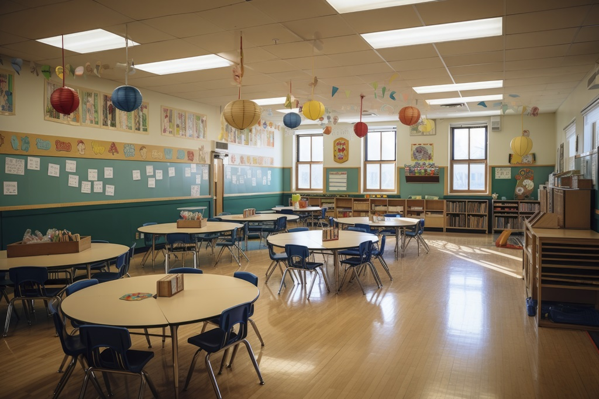
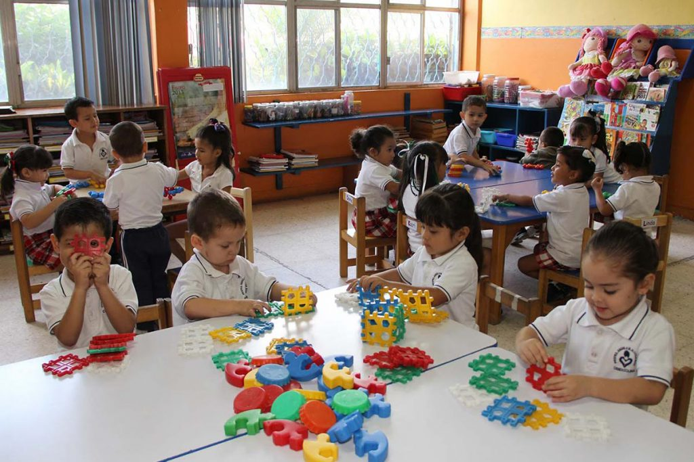

La falta de una educación prescolar de calidad limita el futuro de la niñez al negarle la oportunidad de alcanzar todo su potencial. También limita el futuro de los países, robándoles el capital humano necesario para reducir las desigualdades y promover sociedades pacíficas y prósperas. La educación preescolar universal es una prioridad mundial, porque: establece bases sólidas para el aprendizaje, aumenta la eficacia y la eficiencia de los sistemas educativos, y es una estrategia eficaz para promover el crecimiento económico.
 